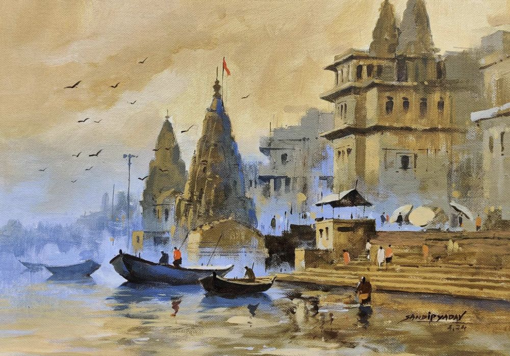
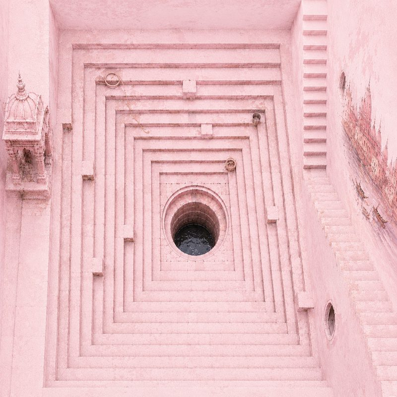

Welcome to Omkaram · Varanasi
Being oneself
Begin your morning on the ancient ghats of Kashi — breathe with the river, move as the Sun rises over the Ganga. Whether you are here for a day or a lifetime, there is a practice waiting for you.
3 easy steps · your best session awaits
No mat? No problem — WhatsApp us and we'll sort one out for you.
On the ghats as dawn breaks over the Ganga (yoga on river banks)
Know more & BookMeet your teacher online, find your style (to enrol into online classes)
Know more & BookOmkaram Studio, Assi Ghat — all welcome (meet teachers & enrol to studio classes)
Know more & BookPatanjali Akhada, Nath shrines, Kabir's ashram (explore Yogic heritage of the city)
Know more & BookAbout Omkaram Yoga
Manjeet Sahani has spent 20 years walking the ghats of Kashi — as a yoga teacher, heritage guide, and keeper of this city's living wisdom. His Heritage Walk holds a perfect 5-star rating with 288 reviews, ranked #1 in Varanasi.
Read 288 reviews on TripAdvisor →288 reviews
Heritage Walk
& Yoga Guide
@varanasi_heritage_tour · Follow the most trusted voice of Varanasi — stories, ghats, culture, and the soul of Kashi
Begin your morning with yoga on the ancient ghats in the land of Adiyogi and Patanjali — one session or many. No commitment, no experience needed. Just show up, breathe, and let the Ganga do the rest. Open sky, sacred river, first light.
Structured classes for those who want to go deeper — beginners through to advanced practitioners. In-person at our studio at Assi Ghat, and online from anywhere in the world. Instruction in English, Hindi, and Kannada.
Our teachers
Born and raised in the devotion-filled atmosphere of Varanasi, Manjeet has spent 20 years on the ghats as a yoga teacher and heritage guide. His vision is to teach yoga from a spirit of genuine service — meeting each student where they are, with the warmth and wisdom of Kashi.
★★★★★ #1 in VaranasiMSc. in Yoga, Svyasa University. Certified Sivananda Yoga teacher, Uttarakashi. Trained in Viniyoga at Krishnamacharya Yoga Mandiram. Versed in classical texts and consciousness studies. A former AI Engineer at WalmartLabs, he also holds an MSc. in AI from the University of Southampton.
Currently a doctor at AIIMS. Expert in Yogic Sciences and Naturopathy. Has published research papers on yoga and healing, and is actively involved in ongoing research in this field. Therapeutic and healing consultant bridging modern medicine with yogic wisdom.
IIT Madras graduate and certified yoga instructor. Specialises in advanced meditation sessions, bringing a precise, analytical understanding of body and mind — making complex concepts clear for every student.
Come find us
We speak English, Hindi, and Kannada.
3 easy steps · your best session awaits
What we teach
Learn Patanjali Yoga in the city of Patanjali himself — the eight-limbed path, from posture to Samadhi.
Classical sequence rooted in the five points of yoga.
The foundation — posture, breath, steadiness.
A dynamic progressive series at your own pace.
Movement linked to breath, fluid and rhythmic.
Krishnamacharya tradition — adapted to you.
The yoga of sound — vibration as a path inward.
Long-held and meditative — stillness and release.
Specialised online therapeutic sessions for healing and wellness — guided by our medical consultant, bridging yogic science with modern medicine.
Varanasi & Yoga
Varanasi is not simply a place where yoga is practised — it was architecturally and geometrically conceived as an outer expression of the human energy system. This is where Adiyogi first transmitted yoga. Where Patanjali wrote the Sutras.
Ancient texts consistently place Shiva — Adiyogi, the originator of yoga — in Varanasi when not in the Himalayas. Kashi is described as his city: the one place on earth he never truly leaves, held outside ordinary time on the tip of his trident.
When not in the high peaks, Varanasi was where Adiyogi sat. The cremation ground at Manikarnika Ghat is said to be where he lit his eternal fire and entered stillness.
On the banks of the Ganga, Adiyogi first transmitted yogic knowledge to the Saptarishis — the seven sages. That act of transmission is what yoga lineages trace themselves back to.
Varanasi is described as a place where Moksha — final liberation — is available to all who come sincerely. The city itself functions as a field of grace.
The great Shiva temple at the heart of Varanasi is considered the Sahasrara — the crown chakra of the city's energy map, connecting the human to the cosmic.
The ghats of Kashi — where Adiyogi sat in meditation
Yogic masters describe Varanasi not simply as a city but as a macrocosmic mechanism — laid out to align the human energy system with cosmic geometry, turning the act of simply living here into a form of practice.
The two rivers bounding Varanasi — Varuna to the north, Asi to the south — represent the left and right energy channels of the human body. The city between them is the Sushumna, the central axis.
The city was traditionally arranged around 468 shrines encoding 9 planets, 8 directions, and 12 zodiac signs across concentric circles — a vast map of cosmic energy expressed in stone and lane.
Each major temple in Varanasi corresponds to a chakra in the human energy body. Moving through the city is movement through the self — from the base of the spine to the crown.
In yogic texts, Varanasi is described as a luminous column rising from the earth — an axis of concentrated spiritual energy anchoring the geography of northern India.

The Ganga at dawn — where the energy grid of Kashi meets the river
Maharishi Patanjali lived and taught in Varanasi. He did not invent yoga — he gathered thousands of scattered yogic traditions and distilled them into 196 precise aphorisms, creating the definitive map of the inner path.
According to local tradition, Patanjali migrated to Kashi and lived near a sacred well called Nag Kuan (Snake Well) in the Jaitpura area of Varanasi. It is widely believed that he performed intense penance here and composed both the Yoga Sutras and his treatise on Sanskrit grammar, the Mahabhashya, at this very site.
Patanjali is revered as an incarnation of Adi Shesha, the divine cosmic serpent. The people of Varanasi celebrate Nag Panchami at Nag Kuan specifically to honour his memory — a living tradition connecting this city to the father of classical yoga.
To study Patanjali Yoga in Varanasi is to study it where it was written — in the same city, beside the same river, under the same sky.
Patanjali gathered thousands of scattered yogic traditions and distilled them into 196 precise sutras — covering ethics, posture, breath, withdrawal, concentration, meditation and Samadhi. The most complete map of the inner path ever written, composed here in Kashi.

Nag Kuan (Snake Well), Varanasi
Tirumalai Krishnamacharya studied in Varanasi (1906–09, 1919–25) — not Mysore. His principal at Varanasi Sanskrit College directed him toward deeper yogic study in Tibet. It was also here that the Maharajah of Mysore first heard of his skill as a yoga therapist and invited him to teach at the palace. From that single invitation, the lineage that produced Pattabhi Jois, B.K.S. Iyengar, Indra Devi and T.K.V. Desikachar was born — and through them, the yoga practised in studios across the world today.
Where Krishnamacharya studied Sanskrit, philosophy and yogic science — and where word of his mastery first began to travel.
Iyengar Yoga · Ashtanga Vinyasa · Viniyoga — all trace their roots to a man whose path was shaped here, in Varanasi.
Shyama Charan Lahiri lived in Varanasi as a government accountant and family man — and yet initiated over 5,000 people into Kriya Yoga, a pranayama-based path he received from Mahavatar Babaji. His radical act: teaching liberation to householders, not just renunciants. His disciple Sri Yukteswar Giri taught Paramahansa Yogananda, whose Autobiography of a Yogi carried Indian yoga to the Western world. That chain began in the lanes of this city. The family shrine at Chousatti Ghat remains active.
A precise pranayama technique that Lahiri taught as a direct scientific path — available to anyone living an ordinary life in the world.
The Lahiri family home and shrine in Varanasi remains active. The lineage continues unbroken through five generations to the present day.
The Nath sampradaya — the lineage that gave Hatha Yoga its physical form — traces from Shiva through Matsyendranath to Gorakshnath, who systematised asana, bandha, mudra and pranayama. His temple stands in Varanasi. The Aghor tradition practises at Manikarnika Ghat. Saint Kabir — poet, weaver, mystic — dissolved the boundaries between yoga, devotion, and mysticism from these same streets.
A living site in Varanasi connected to the systematiser of Hatha Yoga — still visited by practitioners and pilgrims today.
Where the Aghor tradition has practised for centuries. Yoga as confrontation with impermanence — at its most unvarnished.
The ashram of Saint Kabir preserves his legacy at the crossroads of Bhakti, Sufi and Nath traditions — still an active place of gathering.
All Nath and Aghor lineages pass knowledge teacher to student in an unbroken chain — a living practice, not a historical record.
Kashi — the city that has held its breath for ten thousand years
Walk the yoga history of Varanasi with our guides — visiting the Patanjali Akhada, Gorakshnath's temple, Kabir Math, Lahiri Mahasaya's shrine at Chousatti Ghat, and the ghats where all these traditions converge. This is not a museum tour. This is yoga, still breathing.
Book the walk →On the Ghats
Disease Treatment · Yoga and Naturopathy Doctor Consultation
Clinical yoga therapy designed for your specific health condition — developed and tracked by a doctor trained in both Naturopathy and Yoga, practising at AIIMS Raipur.
Tap the button below to send a message directly to Dr. Anirudh and introduce your concern
Schedule a consultation at a time that works for you — online or in person
Receive a personalised Yogic program designed and tracked by the doctor
Anirudh is a Yoga & Naturopathy Consultant with a Bachelor of Naturopathy and Yogic Sciences (BNYS) and a Master's degree in Yoga, backed by over four years of clinical experience in holistic healthcare. He currently serves as a Research Officer at AIIMS Raipur, contributing to clinical research in integrative health and evidence-informed medicine.
His clinical practice focuses on lifestyle-related and chronic health conditions, including diabetes, hypertension, obesity, PCOS, arthritis, digestive disorders, stress-related conditions, and selected mental health concerns. He develops individualised care plans combining yoga therapy, naturopathy, lifestyle modification, nutrition guidance, relaxation techniques, and stress management.
Alongside his clinical work, Anirudh has contributed to scientific research in integrative medicine. He has authored two research publications, including work on:
His approach integrates clinical experience with research, aiming to provide personalised, evidence-informed care that complements conventional medical treatment where appropriate.